Matplotlib-绘图区域
import numpy as np
import matplotlib.pyplot as plt
import pandas as pd
# plt.style.use('seaborn')
plt.rcParams['font.family'] = ['Arial Unicode MS', 'Microsoft Yahei', 'SimHei', 'sans-serif']
绘图，简写
plt.plot([3, 9, 2, 4])
[<matplotlib.lines.Line2D at 0x8b23160>]
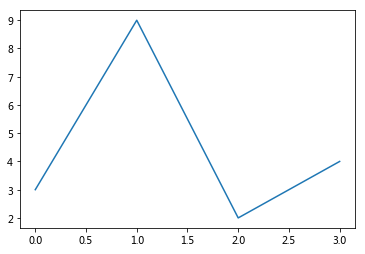
等价于正常写法，面向过程(常用)
plt.figure(1) # 创建figure父窗口，默认编号为1
plt.subplot(111) # 创建ax子窗口，默认：1行 1列 选中第1个
plt.plot([1,2,3])
[<matplotlib.lines.Line2D at 0x8bbdef0>]
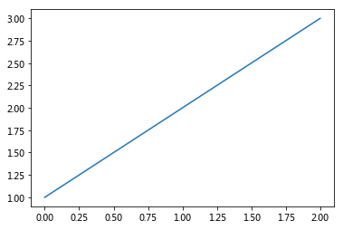
面向对象写法（了解），将窗口对象赋值给变量
fig = plt.figure(2) # 创建父对象
ax = fig.add_subplot(111) # 创建子对象
ax.plot([1,2,3,4]) # 给子对象绘图
[<matplotlib.lines.Line2D at 0x62feb70>]
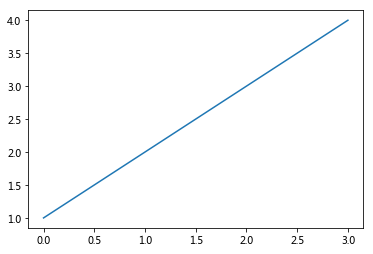
# 前两句合并
fig, ax = plt.subplots()
ax.plot([1,2,3,4])
[<matplotlib.lines.Line2D at 0x63093c8>]
创建多个figure父对象
plt.figure() # 不写父对象号码，默认是1
plt.plot([1,2,3,4])
plt.figure(
2, # 图像编号，创建和选择图像使用
figsize=(18, 5), # 图片大小
facecolor='#cccccc', # 背景颜色
dpi=300, # 分辨率，电脑看72，打印300起
)
plt.plot([2,9,3])
plt.plot([3,12,1,5]) # 绘制到父对象2
plt.figure(1)
plt.plot([0,1,9]) # 绘制到父对象1
[<matplotlib.lines.Line2D at 0x63191d0>]
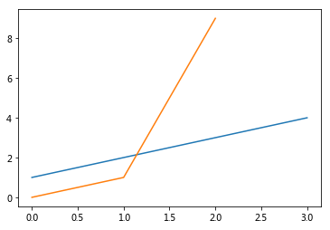
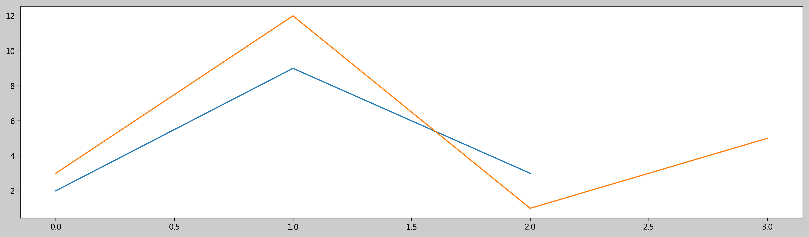
创建多个ax子对象
# 绘制3行2列共6个子图，当前绘制第1个(从左上角横排往右下角)
plt.subplot(321) # 如果是横纵行列都是个位数，可以去掉逗号
plt.plot([1,2,3])
plt.subplot(3, 2, 2)
plt.subplot(3, 2, 3)
plt.subplot(3, 2, 4)
plt.subplot(3, 2, 5)
plt.plot([2,9,1])
plt.subplot(3, 2, 6)
<matplotlib.axes._subplots.AxesSubplot at 0x9f1ecf8>
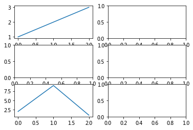
fig父对象和ax子对象结合
# 图1
plt.figure(1)
plt.subplot(1,2,1)
plt.plot([1,2,3])
plt.subplot(1,2,2)
plt.plot([3,9,1])
# 图2
plt.figure(2, figsize=(18, 5))
plt.subplot(1,3,1)
plt.subplot(1,3,2)
plt.subplot(1,3,3)
plt.plot([2,-5,1])
[<matplotlib.lines.Line2D at 0xa5f2f60>]
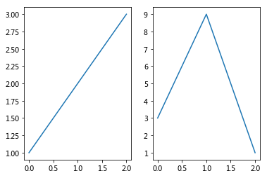
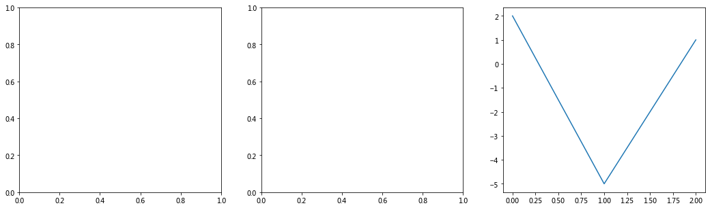
面向对象的fig、ax结合的简写 （了解）
fig, ax = plt.subplots() # 创建父图和子图
ax.plot([1,2,3])
ax.set_title('你好再见')
fig2, ax2 = plt.subplots(3, 2) # 子图：3行2列
ax2
ax2[1, 1].plot([3,1,9]) # 索引坐标获取子图
ax2[1, 1].set_title('第2行第2列')
fig3, ax3 = plt.subplots(
figsize=(12, 3),
nrows=2,
ncols=3,
sharex=False,
sharey=True,
)
ax3[0,0].plot([100, 200, 900])
ax3[0,1].plot([1,2,9])
[<matplotlib.lines.Line2D at 0xc334be0>]
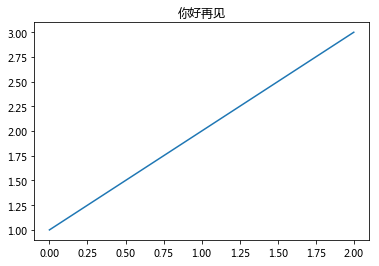
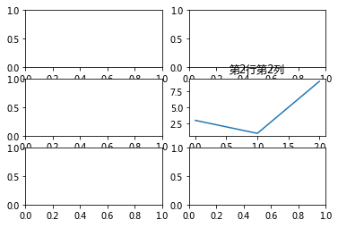
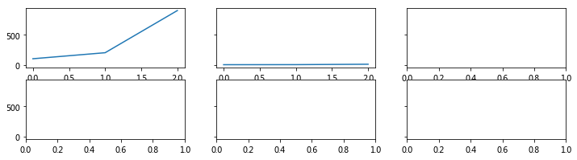
复杂绘图区域：pyplot子绘图区域
设定网格,选中网格,确定选中行列区域数量,编号从0开始
常用于数据面板，仪表板
plt.figure(figsize=(18, 10))
plt.subplot2grid(
(4, 3), # 4行3列
(0, 0), # 选中0行0列单元格
colspan=3, # 合并3列
)
plt.plot([3,5,9,29,4])
plt.subplot2grid(
(4, 3),
(1, 0),
colspan=2,
rowspan=2, # 合并2行
)
plt.bar([1,2,3,4,5],[3,9,4,1,8])
plt.subplot2grid(
(4, 3),
(1, 2),
rowspan=2, #合并2行
)
plt.scatter([1,2,3,4,5],[3,5,9,4,2])
plt.subplot2grid((4, 3),(3, 0))
plt.pie([1,2,3,4])
plt.axis('equal')
plt.subplot2grid((4, 3),(3, 1))
plt.pie([2,9,1,8])
plt.axis('equal')
plt.subplot2grid((4, 3),(3, 2))
plt.pie([1,2,9,8,5])
plt.axis('equal')
(-1.1138856103720687,
1.1006612298966945,
-1.1153284973014734,
1.11725100866372)
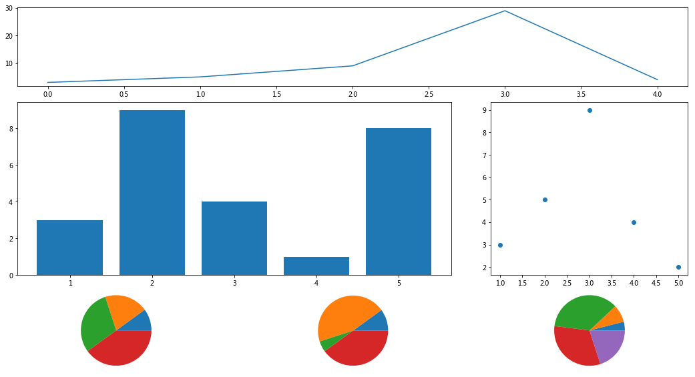
plt.figure(figsize=(18, 10))
plt.subplot2grid(
(4,3),
(3,0),
colspan=1, #选中一个
)
#选中了什么都没画
plt.subplot2grid(
(4,3),
(0,0),
colspan=1, #选中一个
)
plt.pie([45,55])
plt.axis('equal')
plt.subplot2grid(
(4,3),
(0,1),
colspan=2, #合并2列
)
plt.subplot2grid(
(4,3),
(1,0),
rowspan=2, #合并2行
colspan=3, #合并3列
)
<matplotlib.axes._subplots.AxesSubplot at 0xdd12278>
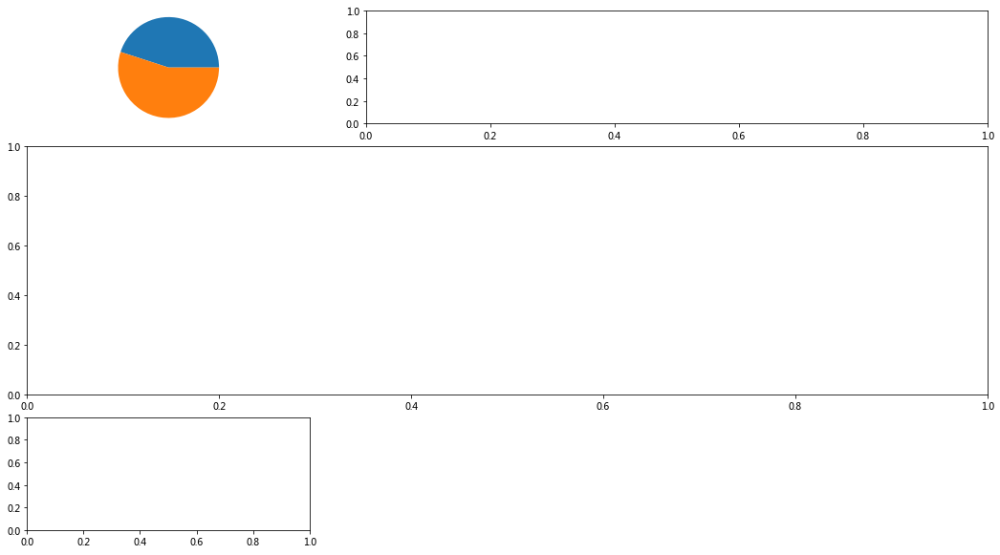